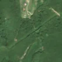
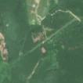

2,7 ha de pădure schimbată lângă Moldovița
Între vara lui 2025 și 27 aprilie 2026, pe aproximativ 2,7 ha de pădure din orașul Moldova Nouă, lângă Moldovița, județul Caraș-Severin, imaginile Sentinel-2 arată că vegetația a dispărut sau s-a schimbat puternic. Nu pare o tăiere de lemn.
Autorizația de tăiere
nu e tăiere de pădure
Schimbarea nu pare tăiere de lemn, așa că autorizațiile de tăiere nu se aplică. E o lucrare, nu o exploatare de lemn: drum, cale ferată, linie electrică, conductă, carieră sau șantier.
Ce se vede în poze: În «după», zona marcată este străbătută de o fâșie lungă și îngustă, care continuă mult în afara ei, pe același traseu pe care există deja un coridor în «înainte» și în «poza detaliată». Apar câteva pete golașe lângă fâșie, dar ele par legate de lucrări pe linia electrică, nu de o tăiere de pădure.


Înainte și după: Copernicus Sentinel-2, 10 m pe pixel, conturul zonei cu portocaliu. Poza detaliată (Esri World Imagery) e de acum 1–4 ani: arată ce era acolo înainte, nu tăierea.
Pe scurt
- Identificator
- 20260427_44776_21713
- Locul
- Moldovița, orașul Moldova Nouă, județul Caraș-Severin (SIRUTA 51056)
- Coordonate (centru)
- 44.77616, 21.71336 · Google Maps · OpenStreetMap
- Suprafața
- 2,7 ha (din pixeli de 10 m; ± câțiva pixeli pe margine)
- Pădurea întreagă
- în vara lui 2025 (de atunci, nori sau iarnă)
- Prima imagine cu schimbarea
- 27 aprilie 2026
- Imagini în care se vede schimbarea
- 10
- Cât de sigur e semnalul din satelit
- scăzută
- Autorizația cea mai apropiată
- APV 2400130500190 · Ocolul Silvic Moldova Noua, valabilă 5 martie 2026 – 30 aprilie 2026, la 262 m de zonă
- Terenul
- pădure de stat, după amenajamentul silvic publicat
- Arie protejată
- Parcul Natural Porțile de Fier, Porțile de Fier, Munții Almăjului - Locvei
- Pădure pierdută în jur, alți ani
- 2012, 2019, 2022 (Hansen)
- Garda Forestieră
- Timișoara
Dacă vrei să verifici sau să sesizezi
- Pădurile din județul Caraș-Severin sunt în grija Gărzii Forestiere Timișoara, care controlează tăierile și dă amenzile.
- Autorizația găsită în zonă e emisă de Ocolul Silvic Moldova Noua.
- Formularul Gărzii Forestiere Naționale primește sesizări și fără nume. Trimite linkul acestei pagini, coordonatele și pozele. Dacă tăierea e în desfășurare, sună la 112.
- Autorizațiile și transporturile de lemn se pot căuta în Inspectorul Pădurii.
Pagina arată ce se vede din satelit și ce scrie în registrul public; nu e o dovadă în sine.
Cum citezi zona
Linkul acestei pagini nu se schimbă. Dacă zona iese vreodată de pe hartă, pagina rămâne, cu data și cu ce știam despre ea.
Pădurea RO, zona 20260427_44776_21713: 2,7 ha, Moldovița, orașul Moldova Nouă, județul Caraș-Severin; schimbare văzută din satelit între vara lui 2025 și 27 aprilie 2026. https://iliemihai.github.io/padurea-ro/zona/20260427_44776_21713/ (consultat la [data]). Date: CC BY 4.0.
Datele zonei: GeoJSON · toate zonele: date deschise · licența CC BY 4.0.
Istoricul zonei pe hartă
Starea se poate schimba când registrul publică o autorizație sau când analistul vede poze mai bune. O ținem aici, ca un link citat să arate și ce spuneam atunci.
Pe hartă cel târziu din 5 noiembrie 2026.
- 5 noiembrie 2026 – azi · nu e tăiere de pădure
Detalii tehnice, pentru verificare
De ce acest nivel de încredere:
- văzută schimbată în 10 imagini diferite
- ultima dată am văzut-o intactă în vara lui 2025 (de atunci, nori sau zăpadă)
- fără părerea AI
Ce a văzut analistul cu context: Coridorul diagonal SW–NE se vede deja în imaginea din 2023 și în Sentinel-2 din 2025, iar în vederea largă continuă dincolo de conturul marcat. Linia electrică (LEA) este la 0 m, iar permisul de tăiere cel mai apropiat este la 262 m, fără suprapunere (verdict nu_taiere). Petele golașe mici din contur sunt neregulate și nu formează o parcelă tăiată rasă cu margini clare, așa că rămâne o incertitudine între lucrări de întreținere a LEA și exploatare locală.
- Placa Sentinel-2
- 34TEQ
- NDVI de referință
- 0.88
- NBR de referință
- 0.65
- Scăderea în pădurea din jur
- 0.06
- Persistență
- 1.0
- NDVI / NBR după
- 0.577 / 0.313
- Analistul cu context (model)
- santier · 0.55
Cum se calculează fiecare: metodologia.
Pune harta zonei într-un articol
Copiază codul în articol (merge în majoritatea site-urilor de știri). Sau pune doar linkul: WhatsApp, Facebook și X arată singure poza zonei.